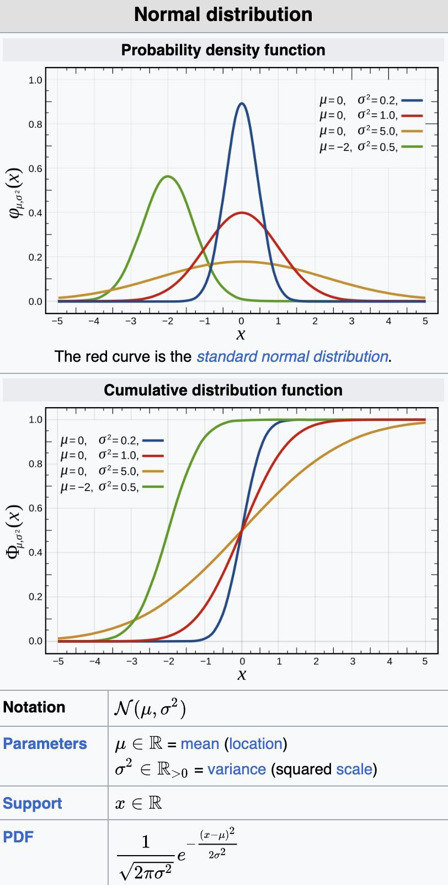
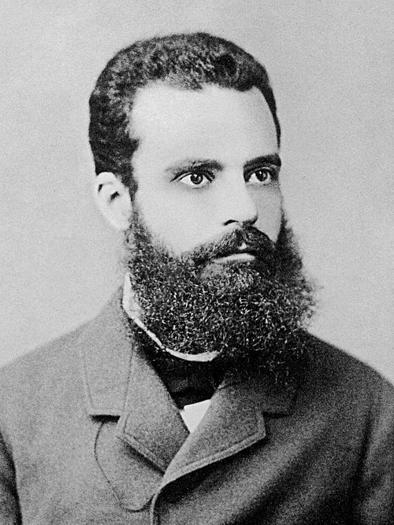
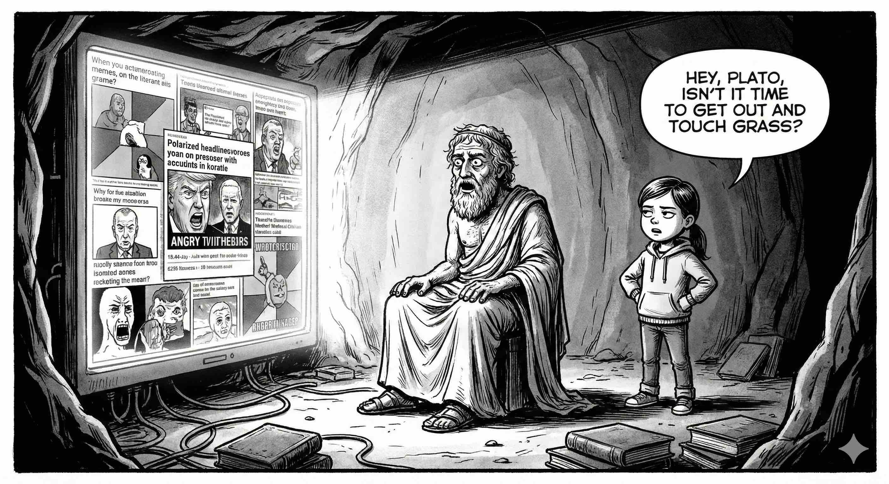

The Galton Board
Francis Galton built a strange machine in 1889. A ball drops from the top. It hits a peg. It goes left or right. Fifty-fifty. Then it hits another peg. Left or right again. By the bottom, after dozens of such meaningless little decisions, something remarkable happens. The balls pile up in the shape of a bell. Every time. Without fail.

This is the Galton Board. A physical monument to one of the most important ideas in probability theory.
Many Small Things Add Up to One Familiar Shape
Here is the deeper point. It is not just balls and pegs.
Take any random variable. Flip a coin. Roll a die. Measure how long it takes your professor to answer an email. Now take many of these — sum them up, average them out. Something happens. The distribution of that sum starts looking like a bell curve. It doesn't matter much what the original distribution was. You sum enough random things, you get the normal distribution.
This is the Central Limit Theorem. It is one of those results that feels like it shouldn't be true and yet refuses to go away.
Why Gauss Called It "Normal"
Carl Friedrich Gauss was not a humble man, but he was an honest one.
He noticed something. Measurement errors in astronomy — random, chaotic, nobody's fault — followed this bell shape. Residuals in physics experiments. Random sums in gambling. The same curve kept showing up uninvited. Like that one colleague who appears at every department event regardless of whether they were invited.
Gauss called it the normal distribution because it seemed to be the natural outcome of summed randomness. The universe's default answer when you ask it to add things up. The name stuck. The curve stayed.
Now Let's Tinker with the Board
The Galton Board produces beautiful bell curves under one silent assumption: each peg is fair. Each ball has a fifty-fifty chance, regardless of what happened before. The past does not matter. The ball does not remember.
But people do.
Imagine a modified board. The ball's chance of going right — of "winning" a given step — is not 0.5. It is 0.5 divided by k, where k is the number of times it has already gone left. Every failure makes the next win slightly harder. Not because the pegs changed. Because the ball carries its history.
This is not an abstraction. Think of an athlete on a losing streak. Think of a student who failed one exam and cannot stop thinking about it during the next one. The feedback loop is psychological, but the mathematics doesn't care about your feelings. It just computes the outcome.
The result is no longer a bell curve. The distribution skews hard. Say, 80 percent of balls end up below the midpoint. Twenty percent accumulate above it. You may recognize this ratio. Vilfredo Pareto noticed in 1896 that roughly 80 percent of land in Italy was owned by 20 percent of the population. He found the same pattern in peas in his garden. The 80/20 rule appears so often in economics and nature that it has acquired an almost mythological status. It is not magic. It is path dependency doing its quiet, merciless work.
Add Competition. Watch It Get Worse.
Now introduce one more ingredient: other balls.
In the real world, you are not falling through pegs alone. You are falling through pegs while ten thousand other balls are doing the same. And your chance of going right is not just a function of your own history — it depends on how many balls are already to your right. More successful competitors means lower probability of success for you. Mathematically, the chance to jump right becomes inversely proportional to the number of balls ahead of you.
Run this simulation. The result is not a bell curve. It is not even the skewed Pareto curve from before. It is something sharper and more brutal: a power-law distribution. The overwhelming majority of balls — 80 percent, 90 percent, sometimes more — pile up in the leftmost bin. A tiny fraction accumulates almost everything.
This is not a hypothetical. This is book sales. The top 1 percent of published books account for the overwhelming majority of revenue. This is music streaming. A small number of songs collect most of the listens while millions of tracks sit in statistical silence. The rich get richer not because they are clever villains twirling mustaches in corner offices. They get richer because social systems are simultaneously random, competitive, and coupled with feedback. Three ingredients. That's the whole recipe.
Here is the demo of all three boards. Play around. Rerun the experiments. Observe how different rules result in different dynamics.
Enter the Algorithm
So far this has been probability theory and sociology. Now it becomes personal.
The content you see on social media is not entirely random. It is not curated by a thoughtful editor either. It is produced by a recommendation algorithm — a machine that has watched your behavior, found users who behave similarly, and decided to show you what those users also liked. This is called collaborative filtering, and it works remarkably well. It also does something else. It applies Galton Board dynamics to culture.
A content creator with more followers gets recommended to more users. More views mean more recommendations. More recommendations mean more views. A product on a marketplace with more reviews gets surfaced higher in search results, which generates more purchases, which generates more reviews. A restaurant with more ratings gets shown first, gets ordered from more, gets rated more. You see the structure. It is our "competitive" Galton Board, implemented in software, running at scale, optimizing for engagement.
In the literature, this is called the discovery problem. How does a new creator, a new product, a new restaurant break into a system that rewards incumbents? It is one of the genuinely hard problems in recommender systems design. Researchers publish papers on it. Companies run experiments. The problem persists. Partly because the feedback loop is not a bug — it is a natural consequence of using past behavior to predict future preferences. The algorithm is doing exactly what it was designed to do.
What You Can Do About It
The algorithm is not your enemy. But it is not your friend either. It is a mirror that slightly distorts what it reflects, and then reflects the distortion back at you.
In most deployed recommendation systems, the algorithm controls what you discover far more than you control it. You click, it learns, it shows you more of the same. The loop tightens. The bubble forms. Not out of malice. Out of math.
But you have one advantage the algorithm lacks. You can act against your own history.
Search proactively. Look for creators you have never heard of. Order from the restaurant with twelve reviews, not twelve hundred. Try the book that has not been recommended to you. These small acts of deliberate exploration are exactly what the algorithm cannot do for you — because discovery, by definition, requires stepping outside the pattern the algorithm has learned.
The alternative is a media diet assembled by a machine trained on your past self. Every recommendation a reflection of who you already were. Every suggestion pulling you slightly further from the parts of the world that were not statistically adjacent to your previous clicks.
The Galton Board is indifferent. The pegs do not care where the ball lands.
You, presumably, do.
Tinker with the Demo
If you want to tinker with the code more and create your own modification of the Galton board, the code is available here: